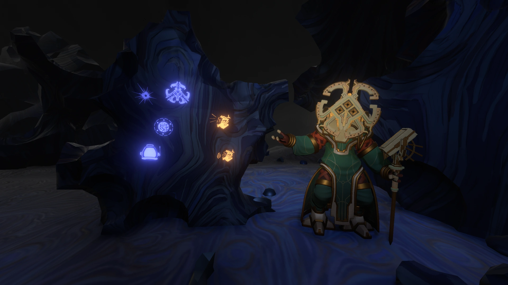

A Lua Quântica (Quantum Moon) é um satélite misterioso que orbita diversos planetas, e costuma desaparecer quando não observada.
A Lua Quântica é de onde vem os fragmentos quânticos espalhados pelo sistema solar. Ela se adapta em aparência ao corpo orbitados e objetos lá tem propriedades quânticas. Um desses, a torre Nomai, permite ao jogador se transportar por diferentes regiões do planeta. A Lua também é satélite do Olho do Universo.
Ao chegar no polo norte quando a Lua orbita o Olho, o jogador encontra Solanum, a única Nomai a qual o jogador tem contato direto. Ela está em uma migração tradicional Nomai à sexta localização da Lua Quântica (o Olho) e fala com o jogador (embora não o entenda). Sua nave pode ser encontrada na Lua, mas ela só está viva quando o satélite orbita o Olho.